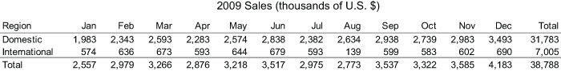
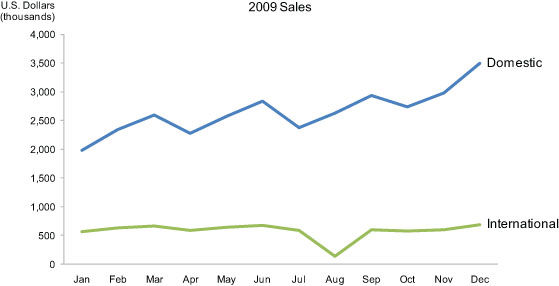
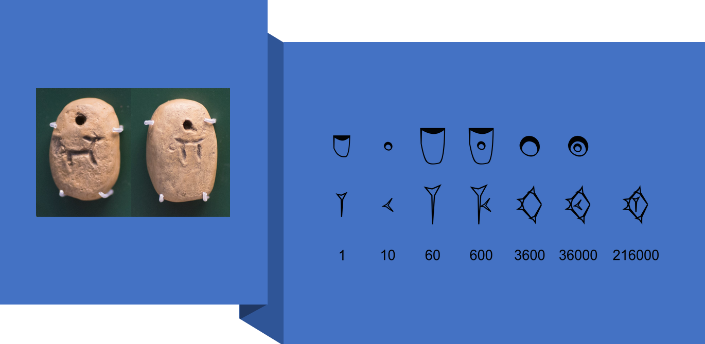
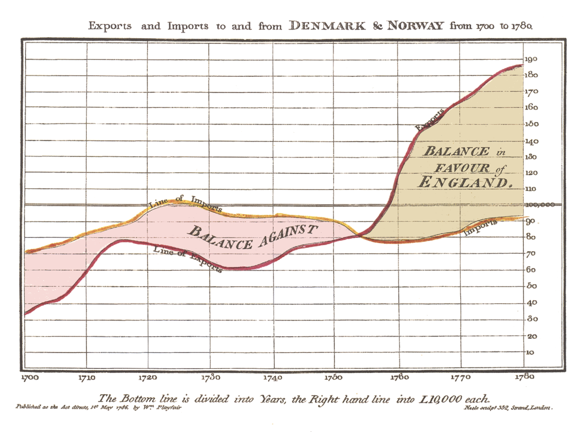
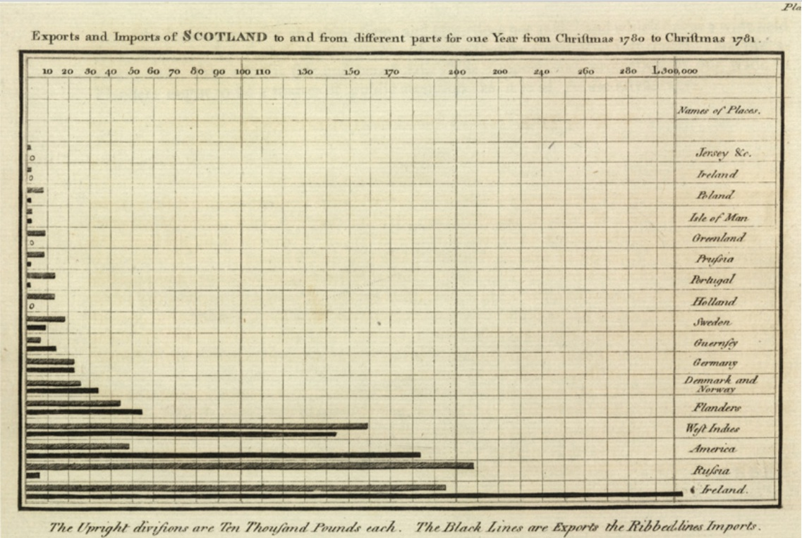
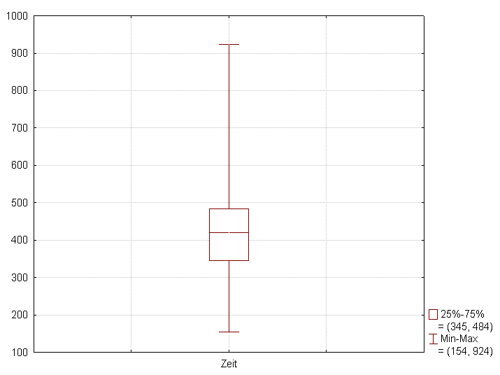
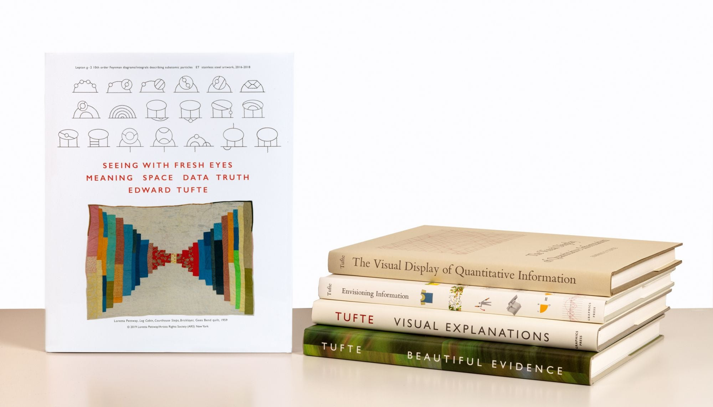
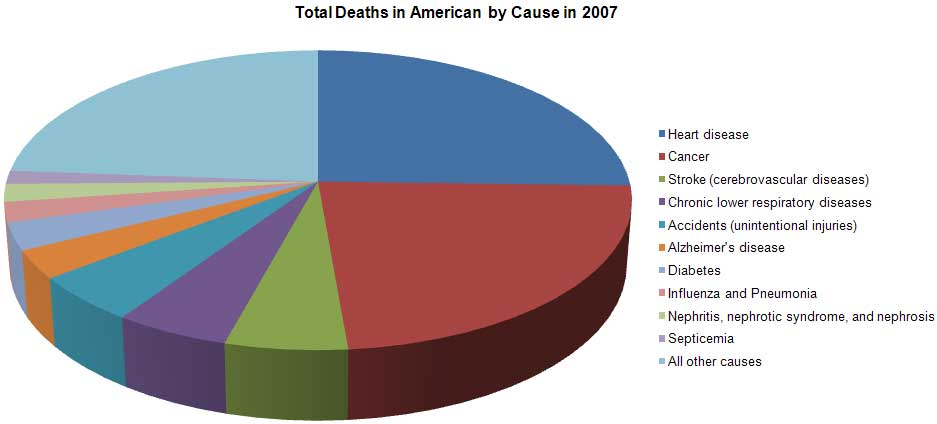
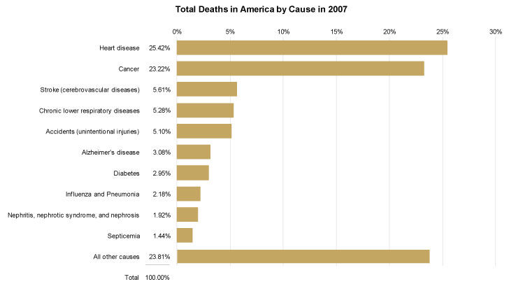

<!DOCTYPE html>
<html lang="en">
  <head>
    <meta charset="utf-8" />
    <meta name="viewport" content="width=device-width, initial-scale=1.0, maximum-scale=1.0, user-scalable=no" />

    <title>w2-7AAVDM52-perception_emotion</title>
    <link rel="stylesheet" href="dist/reveal.css" />
    <link rel="stylesheet" href="dist/theme/black.css" id="theme" />
    <link rel="stylesheet" href="plugin/highlight/zenburn.css" />
	<link rel="stylesheet" href="css/layout.css" />
	<link rel="stylesheet" href="plugin/customcontrols/style.css">
	<link rel="stylesheet" href="plugin/chalkboard/style.css">

	<link rel="stylesheet" href="plugin/reveal-pointer/pointer.css" />


    <script defer src="dist/fontawesome/all.min.js"></script>

	<script type="text/javascript">
		var forgetPop = true;
		function onPopState(event) {
			if(forgetPop){
				forgetPop = false;
			} else {
				parent.postMessage(event.target.location.href, "app://obsidian.md");
			}
        }
		window.onpopstate = onPopState;
		window.onmessage = event => {
			if(event.data == "reload"){
				window.document.location.reload();
			}
			forgetPop = true;
		}

		function fitElements(){
			const itemsToFit = document.getElementsByClassName('fitText');
			for (const item in itemsToFit) {
				if (Object.hasOwnProperty.call(itemsToFit, item)) {
					var element = itemsToFit[item];
					fitElement(element,1, 1000);
					element.classList.remove('fitText');
				}
			}
		}

		function fitElement(element, start, end){

			let size = (end + start) / 2;
			element.style.fontSize = `${size}px`;

			if(Math.abs(start - end) < 1){
				while(element.scrollHeight > element.offsetHeight){
					size--;
					element.style.fontSize = `${size}px`;
				}
				return;
			}

			if(element.scrollHeight > element.offsetHeight){
				fitElement(element, start, size);
			} else {
				fitElement(element, size, end);
			}		
		}


		document.onreadystatechange = () => {
			fitElements();
			if (document.readyState === 'complete') {
				if (window.location.href.indexOf("?export") != -1){
					parent.postMessage(event.target.location.href, "app://obsidian.md");
				}
				if (window.location.href.indexOf("print-pdf") != -1){
					let stateCheck = setInterval(() => {
						clearInterval(stateCheck);
						window.print();
					}, 250);
				}
			}
	};


        </script>
  </head>
  <body>
    <div class="reveal">
      <div class="slides"><section  data-markdown><script type="text/template"><!-- .slide: class="drop" -->
<div class="" style="position: absolute; left: 0px; top: 0px; height: 1199px; width: 1920px; min-height: 1199px; display: flex; flex-direction: column; align-items: center; justify-content: center" absolute="true">

# Visual Perception and Emotion
## Data Visualisation ― week 2


[Dr Daniel Chávez Heras](https://movingpixel.net/)

[7AAVDM52](https://keats.kcl.ac.uk/course/view.php?id=108839)

2023-24
</div>

<aside class="notes"><p>This week we provide some basic definitions and a brief history of data visualisation, framing it in the wider context of visual representation. We explore how data visualisation blends visual perception through mechanisms like preattentive processing and leverages emotional responses to data.</p>
</aside></script></section><section  data-markdown><script type="text/template"><!-- .slide: class="has-dark-background drop" data-background-color="#2b1804" -->
<div class="" style="position: absolute; left: 0px; top: 0px; height: 1199px; width: 1920px; min-height: 1199px; display: flex; flex-direction: column; align-items: center; justify-content: center" absolute="true">

# The road ahead

<div class="callout callout-color8">
<div class="callout-title">
<div class="callout-icon">

<i class="fas fa-list" ></i>


</div>
<div class="callout-title-inner">

In today's lecture:  

</div>
</div>
<div class="callout-content">

1. Definitions

2. Historical context

3. Visual Perception

4. Emotional engagement

5. Questions

</div>
</div>
</div></script></section><section  data-markdown><script type="text/template"><!-- .slide: class="has-dark-background drop" data-background-color="#304f5e" -->
<div class="" style="position: absolute; left: 0px; top: 0px; height: 1199px; width: 1920px; min-height: 1199px; display: flex; flex-direction: column; align-items: center; justify-content: center" absolute="true">

# 1. Definitions

<i class="far fa-sticky-note fa-4x" ></i>
</div></script></section><section  data-markdown><script type="text/template"><!-- .slide: class="drop" -->
<div class="" style="position: absolute; left: 0px; top: 0px; height: 1199px; width: 1920px; min-height: 1199px; display: flex; flex-direction: column; align-items: center; justify-content: center" absolute="true">

<i class="fas fa-quote-left fa-2x" ></i>


>**Data Visualisation** is the graphical display of abstract information for two purposes: sense-making (also called data analysis) and communication.

<i class="fas fa-quote-right fa-2x" ></i>


\- Stephen Few. 2014. [Data Visualization for Human Perception](https://www.interaction-design.org/literature/book/the-encyclopedia-of-human-computer-interaction-2nd-ed/data-visualization-for-human-perception)
</div></script></section><section  data-markdown><script type="text/template"><!-- .slide: class="drop" -->
<div class="" style="position: absolute; left: 0px; top: 0px; height: 1199px; width: 1920px; min-height: 1199px; display: flex; flex-direction: column; align-items: center; justify-content: center" absolute="true">

### Purpose and Power of Data Visualisation

- **Sense-making and Communication**: Transforming abstract information into visual forms.
- **Visual Attributes**: Using length, position, size, shape, color, etc.
</div>

<aside class="notes"><p>doesn&#39;t have to be quantitative data</p>
</aside></script></section><section  data-markdown><script type="text/template"><!-- .slide: class="drop" -->
<div class="" style="position: absolute; left: 0px; top: 0px; height: 1199px; width: 1920px; min-height: 1199px; display: flex; flex-direction: column; align-items: center; justify-content: center" absolute="true">





</div></script></section><section  data-markdown><script type="text/template"><!-- .slide: class="has-dark-background drop" data-background-color="#304f5e" -->
<div class="" style="position: absolute; left: 0px; top: 0px; height: 1199px; width: 1920px; min-height: 1199px; display: flex; flex-direction: column; align-items: center; justify-content: center" absolute="true">

# 2. Historical Context

<i class="fas fa-book fa-4x" ></i>
</div></script></section><section  data-markdown><script type="text/template"><!-- .slide: class="drop" -->
<div class="" style="position: absolute; left: 0px; top: 0px; height: 1199px; width: 1920px; min-height: 1199px; display: flex; flex-direction: column; align-items: center; justify-content: center" absolute="true">

- **Early Practices**: Data arranged in tables since the 2nd century C.E.
- **Graphical Representation**: Introduced by Rene Descartes in the 17th century.
- **Innovations by [William Playfair](https://en.wikipedia.org/wiki/William_Playfair)**: Pioneered line and bar graphs in the 18th century.
</div></script></section><section  data-markdown><script type="text/template"><!-- .slide: class="drop" -->
<div class="" style="position: absolute; left: 0px; top: 0px; height: 1199px; width: 1920px; min-height: 1199px; display: flex; flex-direction: column; align-items: center; justify-content: center" absolute="true">


</div>

<aside class="notes"><p>Pre-cuneiform tags, with drawing of goat or sheep and number (probably &quot;10&quot;), <a href="https://en.wikipedia.org/wiki/Al-Hasakah">Al-Hasakah</a>, 3300–3100 BCE, <a href="https://en.wikipedia.org/wiki/Uruk_period">Uruk culture</a>​</p>
<p>Early <a href="https://en.wikipedia.org/wiki/Proto-cuneiform">Proto-cuneiform</a> (4th millennium BCE) and <a href="https://en.wikipedia.org/wiki/Cuneiform">cuneiform</a> signs for the <a href="https://en.wikipedia.org/wiki/Sexagesimal">sexagesimal</a> system (60, 600, 3600, etc.).​</p>
<p>Modern day Iraq</p>
</aside></script></section><section  data-markdown><script type="text/template"><!-- .slide: class="drop" -->
<div class="" style="position: absolute; left: 0px; top: 0px; height: 1199px; width: 1920px; min-height: 1199px; display: flex; flex-direction: column; align-items: center; justify-content: center" absolute="true">


</div>

<aside class="notes"><p>Administrative tablet from Uruk, from Uruk IV (c. 3350–3200 BC), with signs in a pictographic form.135(<a href="https://en.wikipedia.org/wiki/Uruk_period#cite_note-135">https://en.wikipedia.org/wiki/Uruk_period#cite_note-135</a>) <a href="https://en.wikipedia.org/wiki/Pergamon_Museum">Pergamon Museum</a>.​</p>
<p>Accounting tablet, Uruk III (c. 3200–3000 BC): listing a delivery of cereals for a festival of the goddess Inanna.148(<a href="https://en.wikipedia.org/wiki/Uruk_period#cite_note-148">https://en.wikipedia.org/wiki/Uruk_period#cite_note-148</a>) <a href="https://en.wikipedia.org/wiki/Pergamon_Museum">Pergamon Museum</a>.​</p>
</aside></script></section><section  data-markdown><script type="text/template"><!-- .slide: class="drop" -->
<div class="" style="position: absolute; left: 0px; top: 0px; height: 1199px; width: 1920px; min-height: 1199px; display: flex; flex-direction: column; align-items: center; justify-content: center" absolute="true">


</div></script></section><section  data-markdown><script type="text/template"><!-- .slide: class="drop" -->
<div class="" style="position: absolute; left: 0px; top: 0px; height: 1199px; width: 1920px; min-height: 1199px; display: flex; flex-direction: column; align-items: center; justify-content: center" absolute="true">


</div></script></section><section  data-markdown><script type="text/template"><!-- .slide: class="drop" -->
<div class="" style="position: absolute; left: 0px; top: 0px; height: 1199px; width: 1920px; min-height: 1199px; display: flex; flex-direction: column; align-items: center; justify-content: center" absolute="true">

### Evolution and Modern Approaches

- **20th Century Advancements**: Significant contributions by [Jacques Bertin](https://en.wikipedia.org/wiki/Jacques_Bertin), [John Tukey](https://en.wikipedia.org/wiki/John_Tukey), [Edward Tufte](https://en.wikipedia.org/wiki/Edward_Tufte), and [William S. Cleveland](https://en.wikipedia.org/wiki/William_S._Cleveland).
- **Information Visualisation**: Emergence as a research field.
- **Modern Tools**: Advancements in practical applications, e.g., [Tableau Software](https://www.tableau.com), [RAWGraphs](https://www.rawgraphs.io/), [D3](https://d3js.org/).
</div></script></section><section  data-markdown><script type="text/template"><!-- .slide: class="drop" -->
<div class="" style="position: absolute; left: 0px; top: 0px; height: 1199px; width: 1920px; min-height: 1199px; display: flex; flex-direction: column; align-items: center; justify-content: center" absolute="true">


</div>

<aside class="notes"><p>1953 cartographic projection</p>
</aside></script></section><section  data-markdown><script type="text/template"><!-- .slide: class="drop" -->
<div class="" style="position: absolute; left: 0px; top: 0px; height: 1199px; width: 1920px; min-height: 1199px; display: flex; flex-direction: column; align-items: center; justify-content: center" absolute="true">


</div>

<aside class="notes"><p>box plot</p>
</aside></script></section><section  data-markdown><script type="text/template"><!-- .slide: class="drop" -->
<div class="" style="position: absolute; left: 0px; top: 0px; height: 1199px; width: 1920px; min-height: 1199px; display: flex; flex-direction: column; align-items: center; justify-content: center" absolute="true">


</div></script></section><section  data-markdown><script type="text/template"><!-- .slide: class="has-dark-background drop" data-background-color="#304f5e" -->
<div class="" style="position: absolute; left: 0px; top: 0px; height: 1199px; width: 1920px; min-height: 1199px; display: flex; flex-direction: column; align-items: center; justify-content: center" absolute="true">

# 2. Visual perception

<i class="far fa-eye fa-4x" ></i>
</div></script></section><section  data-markdown><script type="text/template"><!-- .slide: class="drop" -->
<div class="" style="position: absolute; left: 0px; top: 0px; height: 1199px; width: 1920px; min-height: 1199px; display: flex; flex-direction: column; align-items: center; justify-content: center" absolute="true">

### Why perception?

- **Aligning with Perception**: Effective visualisation matches how we discern and understand information.
- **Leveraging Visual Perception**: Faster and more efficient than cognition.
- **Gestalt Principles**: Informing effective visualisation design.
</div>

<aside class="notes"><p>Gestalt school of psychology, 1912</p>
</aside></script></section><section  data-markdown><script type="text/template"><!-- .slide: class="drop" -->
<div class="" style="position: absolute; left: 0px; top: 0px; height: 1199px; width: 1920px; min-height: 1199px; display: flex; flex-direction: column; align-items: center; justify-content: center" absolute="true">

### Preattentive Processing and Attention Mechanisms

- **Rapid Information Processing**: Leveraging basic visual attributes for quick understanding.
- **Example**: Differences in length, size, hue, and color intensity as visualisation elements.
</div></script></section><section  data-markdown><script type="text/template"><!-- .slide: class="drop" -->
<div class="" style="position: absolute; left: 0px; top: 0px; height: 1199px; width: 1920px; min-height: 1199px; display: flex; flex-direction: column; align-items: center; justify-content: center" absolute="true">

...34, 55, 89,144,233,377,610,987, 1597, 2584, 4181, 6765, 10946, 17711, 28657, 46368, 75025, 121393, 196418, 317811, 514229...
</div></script></section><section  data-markdown><script type="text/template"><!-- .slide: class="drop" -->
<div class="" style="position: absolute; left: 0px; top: 0px; height: 1199px; width: 1920px; min-height: 1199px; display: flex; flex-direction: column; align-items: center; justify-content: center" absolute="true">


</div></script></section><section  data-markdown><script type="text/template"><!-- .slide: class="drop" -->
<div class="" style="position: absolute; left: 0px; top: 0px; height: 1199px; width: 1920px; min-height: 1199px; display: flex; flex-direction: column; align-items: center; justify-content: center" absolute="true">

## Some Gestalt principles:

- Proximity
- Similarity
- Enclosure
- Closure
- Continuity
- Connection
</div></script></section><section  data-markdown><script type="text/template"><!-- .slide: class="drop" -->
<div class="" style="position: absolute; left: 0px; top: 0px; height: 1199px; width: 1920px; min-height: 1199px; display: flex; flex-direction: column; align-items: center; justify-content: center" absolute="true">

### Comparing Effectiveness of Different Visualisations

- Clearly **indicates** how the values relate to one another.
    
- **Represents** the quantities accurately.
    
- Makes it easy to **compare** the quantities.
    
- Makes it easy to see the ranked **order of values**
</div></script></section><section  data-markdown><script type="text/template"><!-- .slide: class="drop" -->
<div class="" style="position: absolute; left: 0px; top: 0px; height: 1199px; width: 1920px; min-height: 1199px; display: flex; flex-direction: column; align-items: center; justify-content: center" absolute="true">


</div>

<aside class="notes"><p>areas, angles, distance along a curve are not easily perceived!
Perspective skews the relative size of the slices</p>
</aside></script></section><section  data-markdown><script type="text/template"><!-- .slide: class="drop" -->
<div class="" style="position: absolute; left: 0px; top: 0px; height: 1199px; width: 1920px; min-height: 1199px; display: flex; flex-direction: column; align-items: center; justify-content: center" absolute="true">


</div></script></section><section  data-markdown><script type="text/template"><!-- .slide: class="drop" -->
<div class="" style="position: absolute; left: 0px; top: 0px; height: 1199px; width: 1920px; min-height: 1199px; display: flex; flex-direction: column; align-items: center; justify-content: center" absolute="true">

## Future directions in data visualisation

- Geo-spatial and network displays
    
- Collaborative data sense-making
    
- Predictive visual analytics
    
- Improved pattern recognition through ML technologies
    
- Improved human-computer interfaces
</div></script></section><section  data-markdown><script type="text/template"><!-- .slide: class="has-dark-background drop" data-background-color="#304f5e" -->
<div class="" style="position: absolute; left: 0px; top: 0px; height: 1199px; width: 1920px; min-height: 1199px; display: flex; flex-direction: column; align-items: center; justify-content: center" absolute="true">

# 3. Emotional engagement

<i class="fas fa-theater-masks fa-4x" ></i>
</div></script></section><section  data-markdown><script type="text/template"><!-- .slide: class="drop" -->
<div class="" style="position: absolute; left: 0px; top: 0px; height: 1199px; width: 1920px; min-height: 1199px; display: flex; flex-direction: column; align-items: center; justify-content: center" absolute="true">

### Datafication and emotional response

- **Beyond objectivity:** the role of emotions in data visualisation
- **Quantifying Social Aspects**: Transformation into quantifiable data.
- **Emotional Impact**: Data not just about numbers but also about feelings they evoke.
</div></script></section><section  data-markdown><script type="text/template"><!-- .slide: class="drop" -->
<div class="" style="position: absolute; left: 0px; top: 0px; height: 1199px; width: 1920px; min-height: 1199px; display: flex; flex-direction: column; align-items: center; justify-content: center" absolute="true">


</div></script></section><section  data-markdown><script type="text/template"><!-- .slide: class="drop" -->
<div class="" style="position: absolute; left: 0px; top: 0px; height: 1199px; width: 1920px; min-height: 1199px; display: flex; flex-direction: column; align-items: center; justify-content: center" absolute="true">


</div>

<aside class="notes"><p>by county, 2016</p>
</aside></script></section><section  data-markdown><script type="text/template"><!-- .slide: class="drop" -->
<div class="" style="position: absolute; left: 0px; top: 0px; height: 1199px; width: 1920px; min-height: 1199px; display: flex; flex-direction: column; align-items: center; justify-content: center" absolute="true">


</div></script></section><section  data-markdown><script type="text/template"><!-- .slide: class="drop" -->
<div class="" style="position: absolute; left: 0px; top: 0px; height: 1199px; width: 1920px; min-height: 1199px; display: flex; flex-direction: column; align-items: center; justify-content: center" absolute="true">

### Visualisations and Emotional Impact

- **Aesthetic and Emotional Impact**: Design influences emotional response.
- **Importance of Design**: Visual appeal vs comunicacional effectiveness
</div></script></section><section  data-markdown><script type="text/template"><!-- .slide: class="has-dark-background drop" data-background-color="#2b1804" -->
<div class="" style="position: absolute; left: 0px; top: 0px; height: 1199px; width: 1920px; min-height: 1199px; display: flex; flex-direction: column; align-items: center; justify-content: center" absolute="true">

# The road behind

<div class="callout callout-color2">
<div class="callout-title">
<div class="callout-icon">

<i class="fas fa-fire-alt" ></i>


</div>
<div class="callout-title-inner">

In summary:

</div>
</div>
<div class="callout-content">

- Effective data visualisation aligns with human visual perception for better understanding and communication.

- Historical and modern approaches show the evolution of visualisation techniques and tools.

- Emotional responses play a significant role in how people interact with and interpret data visualisations.

- Understanding the emotional impact is crucial for effective data communication and engagement.

</div>
</div>
</div></script></section><section  data-markdown><script type="text/template"><!-- .slide: class="drop" -->
<div class="" style="position: absolute; left: 0px; top: 0px; height: 1199px; width: 1920px; min-height: 1199px; display: flex; flex-direction: column; align-items: center; justify-content: center" absolute="true">

# Questions?
<i class="far fa-question-circle fa-4x" ></i>
</div>

<aside class="notes"><p>bye!</p>
</aside></script></section><section  data-markdown><script type="text/template">

</script></section></div>
    </div>

    <script src="dist/reveal.js"></script>

    <script src="plugin/markdown/markdown.js"></script>
    <script src="plugin/highlight/highlight.js"></script>
    <script src="plugin/zoom/zoom.js"></script>
    <script src="plugin/notes/notes.js"></script>
    <script src="plugin/math/math.js"></script>
	<script src="plugin/mermaid/mermaid.js"></script>
	<script src="plugin/chart/chart.min.js"></script>
	<script src="plugin/chart/plugin.js"></script>
	<script src="plugin/menu/menu.js"></script>
	<script src="plugin/customcontrols/plugin.js"></script>
	<script src="plugin/chalkboard/plugin.js"></script>
	<script src="plugin/reveal-pointer/pointer.js"></script>
	<script src="plugin/elapsed-time-bar/elapsed-time-bar.js"></script>

    <script>
      function extend() {
        var target = {};
        for (var i = 0; i < arguments.length; i++) {
          var source = arguments[i];
          for (var key in source) {
            if (source.hasOwnProperty(key)) {
              target[key] = source[key];
            }
          }
        }
        return target;
      }

	  function isLight(color) {
		let hex = color.replace('#', '');

		// convert #fff => #ffffff
		if(hex.length == 3){
			hex = `${hex[0]}${hex[0]}${hex[1]}${hex[1]}${hex[2]}${hex[2]}`;
		}

		const c_r = parseInt(hex.substr(0, 2), 16);
		const c_g = parseInt(hex.substr(2, 2), 16);
		const c_b = parseInt(hex.substr(4, 2), 16);
		const brightness = ((c_r * 299) + (c_g * 587) + (c_b * 114)) / 1000;
		return brightness > 155;
	}

	var bgColor = getComputedStyle(document.documentElement).getPropertyValue('--r-background-color').trim();
	var isLight = isLight(bgColor);

	if(isLight){
		document.body.classList.add('has-light-background');
	} else {
		document.body.classList.add('has-dark-background');
	}

      // default options to init reveal.js
      var defaultOptions = {
        controls: true,
        progress: true,
        history: true,
        center: true,
        transition: 'default', // none/fade/slide/convex/concave/zoom
        plugins: [
          RevealMarkdown,
          RevealHighlight,
          RevealZoom,
          RevealNotes,
          RevealMath.MathJax3,
		  RevealMermaid,
		  RevealChart,
		  RevealCustomControls,
		  RevealMenu,
	      RevealPointer,
		  RevealChalkboard, 
		  ElapsedTimeBar
        ],


    	allottedTime: 120 * 1000,

		mathjax3: {
			mathjax: 'plugin/math/mathjax/tex-mml-chtml.js',
		},
		markdown: {
		  gfm: true,
		  mangle: true,
		  pedantic: false,
		  smartLists: false,
		  smartypants: false,
		},

		mermaid: {
			theme: isLight ? 'default' : 'dark',
		},

		customcontrols: {
			controls: [
				{id: 'toggle-overview',
				title: 'Toggle overview (O)',
				icon: '<i class="fa fa-th"></i>',
				action: 'Reveal.toggleOverview();'
				},
				{ icon: '<i class="fa fa-pen-square"></i>',
				title: 'Toggle chalkboard (B)',
				action: 'RevealChalkboard.toggleChalkboard();'
				},
				{ icon: '<i class="fa fa-pen"></i>',
				title: 'Toggle notes canvas (C)',
				action: 'RevealChalkboard.toggleNotesCanvas();'
				},
			]
		},
		menu: {
			loadIcons: false
		}
      };

      // options from URL query string
      var queryOptions = Reveal().getQueryHash() || {};

      var options = extend(defaultOptions, {"width":1920,"height":1199,"margin":0,"controls":true,"progress":true,"slideNumber":true,"transition":"slide","transitionSpeed":"default"}, queryOptions);
    </script>

    <script>
      Reveal.initialize(options);
    </script>
  </body>

  <!-- created with Advanced Slides -->
</html>
